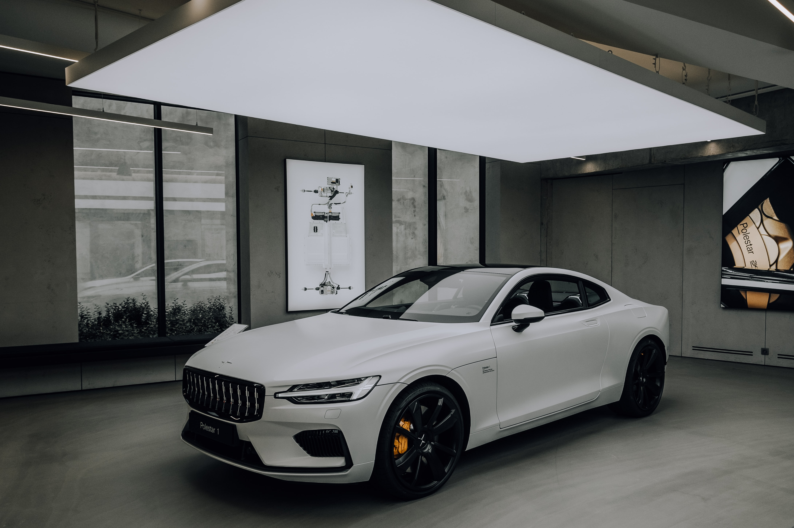
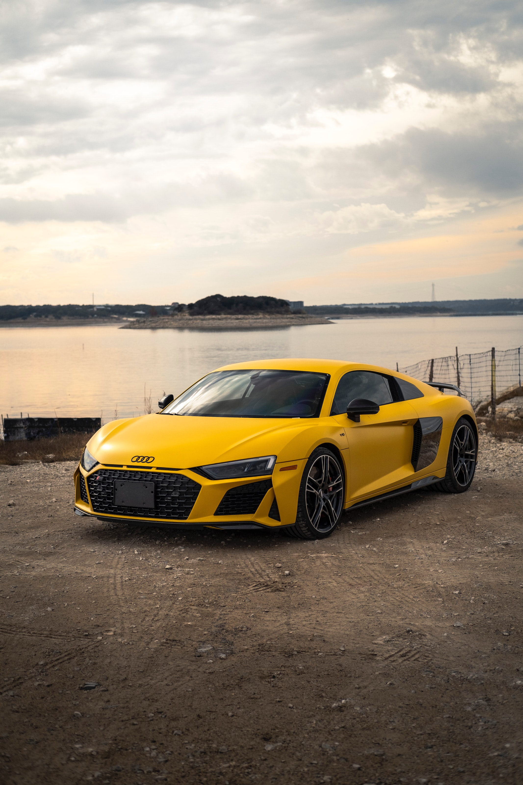
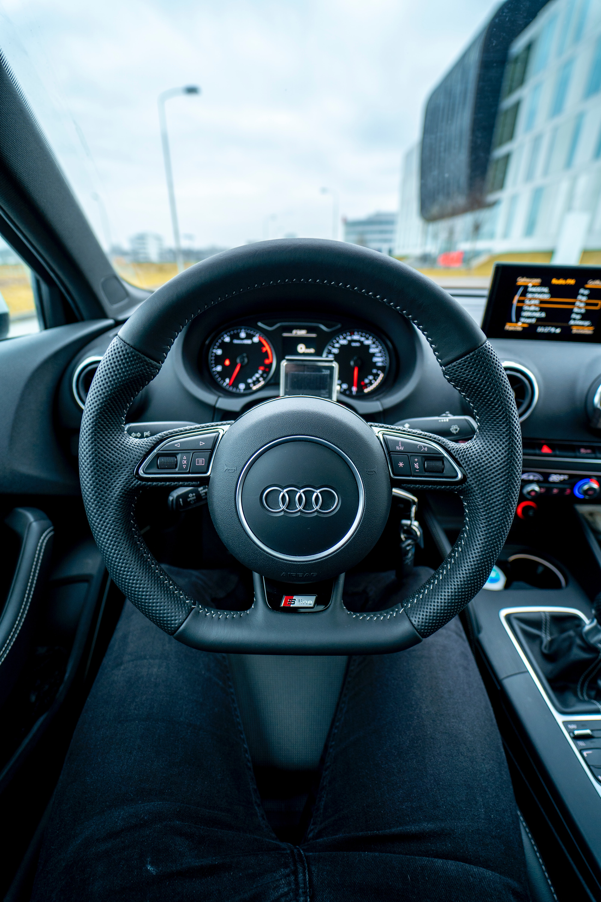

Living the simple life
A BLOG EXPLORING MINIMALISM IN LIFE
Audi R8 Extreme

DESCRIPTION:
The second generation of the R8 (model code: Type 4S) was unveiled at the 2015 Geneva Motor Show and is based on the Modular Sports System platform shared with the Lamborghini Huracan. The development of the Type 4S commenced in late 2013 and was completed in late 2014. Initial models included the all-electric e-Tron and the V10 5.2 FSI along with the V10 plus. Unlike its predecessor, there was no manual transmission available and the entry-level V8 trim was also dropped.[13][14] In 2016, the convertible (Spyder) variant was added to the line up which was initially available in the base V10 trim. In mid-2017, the high performance V10 plus Spyder was added to the range. A rear-wheel-drive model called the R8 RWS was introduced.
RECENT:
In 2018, the R8 received a mid-cycle refresh with mechanical and exterior changes. The newer and more aggressive design language carried over from famous Audi models of the past and its appearance is slightly more angular up front. Some of the
RECENT:
In 2018, the R8 received a mid-cycle refresh with mechanical and exterior changes. The newer and more aggressive design language carried over from famous Audi models of the past and its appearance is slightly more angular up front. Some of the
RECENT:
In 2018, the R8 received a mid-cycle refresh with mechanical and exterior changes. The newer and more aggressive design language carried over from famous Audi models of the past and its appearance is slightly more angular up front. Some of the

PICTURES

PICTURES